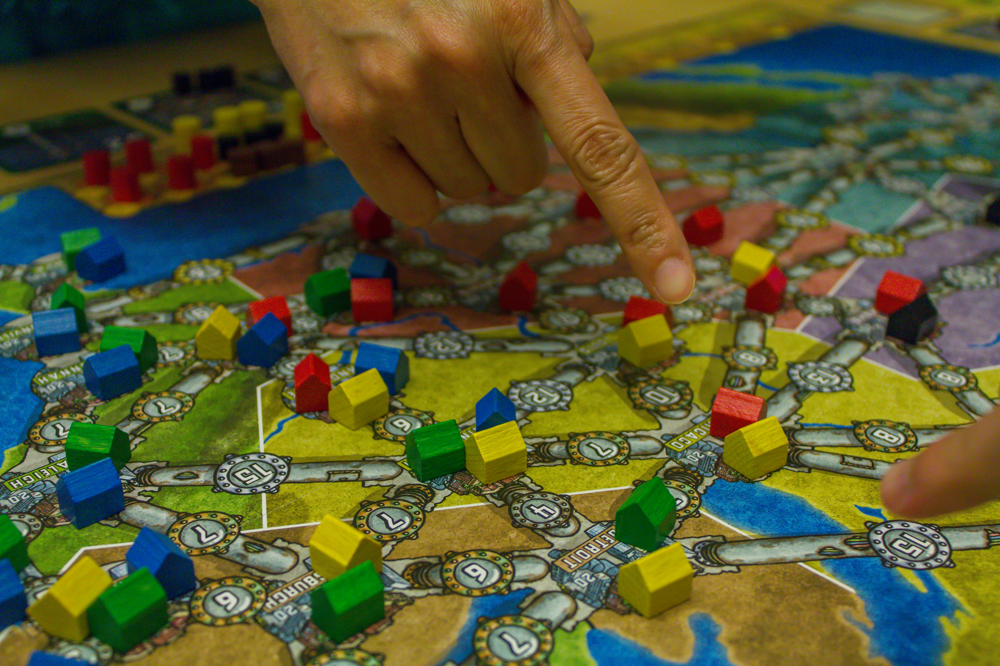
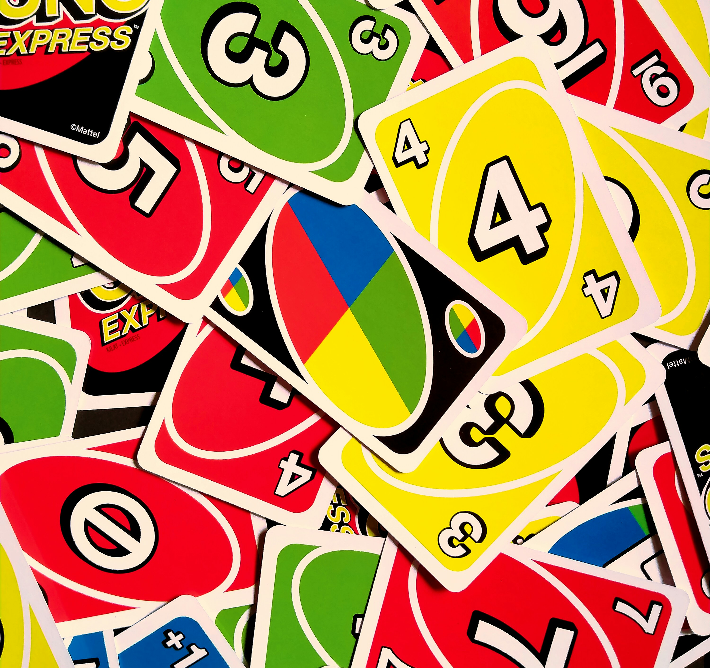

The Ultimate Game Night Guide
If you want the ultimate game night, it’s all about finding the right mix of fun games and great food to enjoy while you play! This website is here to help you plan a night that’s full of laughs, good competition, and plenty of snacks. Whether you’re hosting a big group of friends or just a few people, you’ll find ideas here to make the night easy to plan and fun for everyone. So grab your favorite games, get some tasty food ready, and let’s make your next game night one to remember!
Food

Food and snacks are a key part of any game night. Without the right snacks, or any snacks at all, it will dampen you amazing game night! Go here (link here with the food webpage) for some help with figuring out the right food for your game night!
Games
You have you make sure that you pick the right game for your group of friends! The game that you choose picks the entire mood of the night! Go here (link here with the games webpage) for some help with figuring out the right game for you and your friends!